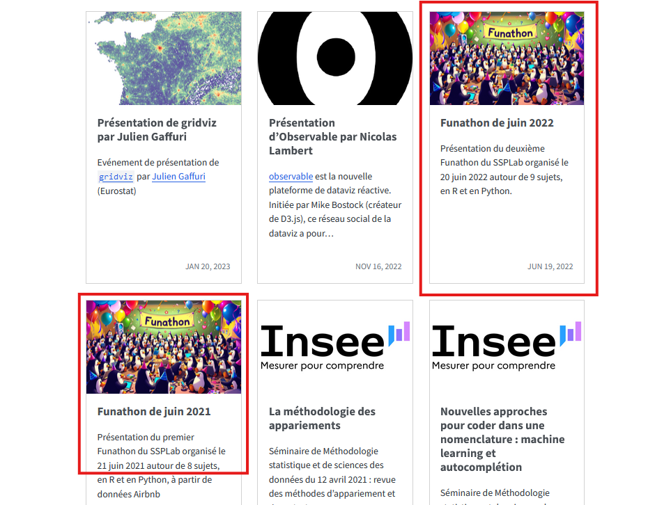
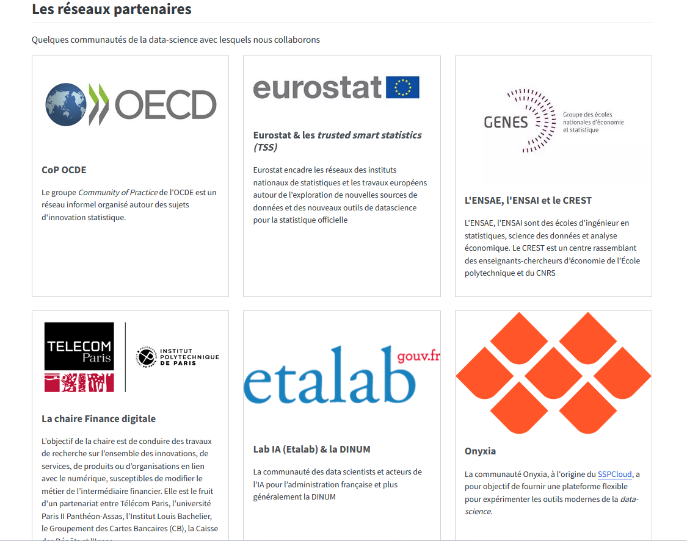
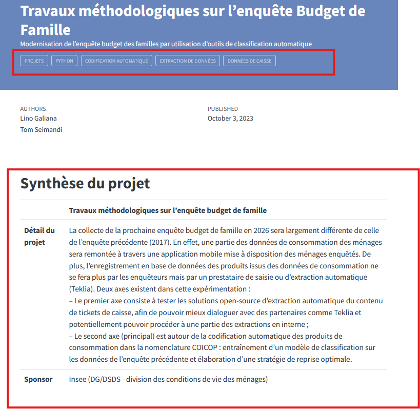

Comparaison avec les autres sites référencés par Eurostat et évolution du site SSPHub
2027-05-09
Sommaire
1 Comparaison des autres sites de statistiques expérimentales
1.1 Résumé
Comparaison de 4 sites d’autres INS (DE, IT, BE, NL) listés sur le sites de statistiques expérimentales de Eurostat
Ce que les autres ont et le site SSPHub n’a pas
- existe en anglais
- téléchargement des données produites
- présentation stable par projet, avec une page par projet permettant de savoir ce qui a été fait et est encore utilisé
Ce que le SSPLab a et les autres non
- Beaucoup de publication open source
- Une vision plus large que les seules statistiques expérimentales (croisement de données administratives, webscrapping) et tournée vers l’innovation méthodologique

1.2 Belgique - Statbel

- une structure stable en trois onglets (pas toujours remplis) avec un descriptif et la présentation des principaux résultats avec des graphiques
- 17 présentations de statistiques expérimentales par Statbel
Points forts
- existe en anglais
- téléchargement des données produites
Améliorations
- Pas de publication open source
- une vision plus large des statistiques expérimentales, incluant le croisement de données administratives (un seul à partir de nouvelles données trouvé sur 8 projets)
- centré sur des statistiques expérimentales plus que sur des méthodes ou données innovantes : 1 seul projet sur les 10 serait considéré comme de l’innovation à l’Insee
Quelques exemples belges
- Carroyage de la population : Grid à mailles variables, décembre 2024 ou proximité d’infrastructure essentielle: carroyage de la population belge et proximité (5km, 10km, 20km) d’une infrastructure dite essentielle
- Revenu disponible administratif, novembre 2024 : le but est de calculer un revenu médian par commune à partir des registres légaux de population
- Statistiques sur les unités établissements, juin 2024 : le but est de répartir l’emploi au niveau de l’établissement et non agrégé au niveau de l’établissement mère, afin d’avoir une répartition géographique des emplois plus fine au niveau national
Autres exemples de statistiques expérimentales
- Entrepreneurs indépendants, mars 2025 : estimation annuelle des entrepreneurs par croisement de données administratives
- Données des plateformes dans le secteur du tourisme résidentiel, septembre 2024 : suivi du nombre de réservation en lgien sur 4 plateformes (Airbnb, Booking.com, Expedia Group et TripAdvisor, reçues via Eurostat). Potentiel usage de webscrapping et de reconnaissance de texte et de photos
- Accident selon le type de véhicule, juillet 2024 : estimation plus fine des types de véhicules impliqués dans les accidents par croisement entre deux bases administratives belges
- Possession de voiture par ménage, septembre 2023 : croisement de bases administratives pour déterminer le nombre de voitures par ménages. La statistique, validée en interne et externe, devient officielle.
- Chiffres mensuels sur le marché du travail, avril 2024 : chiffres obtenus à partir enquête de Statbel
- Census enseignement, septembre 2021 : croisement de bases de données administratives (des communautés et régions) pour des statistiques plus fine sur le niveau d’enseignement des résidents belges
1.3 Allemagne - Destatis
Publication de données innovantes en méthode et source de données sous trois catégories :
short-term indicators specifically developed to represent economic developments as early as possible.
other indicator to reflect current non-economic developments that are relevant for society.
workshop reports on projects that tested new methods of data collection or evaluation, including experimental special evaluations and feasibility studies
Points forts
- 5/8 indicateurs sur 12/14 rapports en anglais
- fourniture de données téléchargeables
- rapport sur l’expérimentation faite, quelque soit son résultat
Améliorations
- peu d’innovation méthodologique
Quelques exemples allemands
Index de consommation de produit alimentaire, 2024 : mise à disposition donnée haute fréquence de consommation de produits alimentaires à partir des données transmises par des grandes enseignes (jusque fin 2024)
Labor market indicator: LinkedIn Hiring Rate : estimation du taux de personne indiquant un nouvel employeur dans Linkedin, et comparaison avec données “classiques” par secteur
Truck toll mileage : donner un indicateur de production industrielle à partir des données de péage de camions routiers obtenus par le Ministère des Transports allemand
Usage d’images satellites pour les statistiques de BTP : en lien avec le programme EO4ConStat de la CE et l’ING allemand, usage d’images satellites pour construire indicateur d’activité du secteur des BTP
Part du travail des personnes protégées par appariement statistique à partir d’une base administrative et de données d’enquête sur les étrangers présents en Allemagne
1.4 Italie - Istat
Publication de données innovantes en méthode et source de données sous quatre catégories :
- Non-standard classifications produced on the basis of the official taxonomies defined at an international level and currently used by Istat, or proposed as experimental within analysis and research activities based on microdata processing
- New indicators produced through the integration of a multiplicity of official and non-official sources; in this case, the focus is on phenomena under investigation rather than on statistical sources used to describe them
- Interpretation frameworks and analysis of complex phenomena obtained through the integration of official sources
- Results of experiments on Big Data, characterised, by their very nature, by the use of non-official sources.
Points forts
- environ 2/3 publiés aussi en anglais
- fourniture de données téléchargeables
Améliorations
- peu d’innovation méthodologique
Quelques exemples italiens
indicateur d’accident grâce à open street map, 2025 : calcul d’indicateur d’accident en prenant en compte l’origine de la voiture, le nombre de routes par région
Mesure de la municipalité, 2025 (italien ): publication d’un tableau de bord des principales données régionalisées jusqu’au niveau communal ici
1.5 Pays-Bas - CBS
Site pour mettre en valeur l’innovation à CBS, aussi bien en terme de méthode que de données innovantes. Publication sous la forme de Beta products ou d’articles de recherche.
7 domaines innovants de travail, dont :
- Extraction d’information (textuelle text mining, NLP, image, machine learning …) et stratégie gouvernementale de l’IA
- Simplification de la collecte lors d’enquêtes (application, traitement de données personnelles) et modèles statistiques
- Préserver la confidentialité, en lien avec le monde universitaire (federated or distributed learning, multiparty computation) ou la création de données synthétiques
- Data engineering (réupération, integration, management, securité)
Points forts
- quelques articles en anglais (3/10)
- usage plus intensif de nouvelles méthodes (ML, NLP)
Améliorations
- 2 beta produits transformés en production
Quelques exemples néerlandais
- Indice de prix à la consommation : usage de données de caisse pour calcul de l’IPC, utilisé en production
- Offres d’emploi en ligne : usage depuis 2022 de données sur les postes vacants en ligne pour enrichir les statistiques sur les postes vacants, utilisé en production
- Investigative study on new statistics on home delivery services : statistiques expérimentales, financée par l’UE, sur le secteur de la livraison à domicile (PPP avec les entreprises pour les définir, expertiser quelles données sont disponibles sans enquête)
- Tableau de bord des facteurs de risques liés à la pauvreté, 2024 : Estimer le risque de devenir pauvre à partir de données administratives et de ML
- Calculer la probabilité de déménagement par des bases administratives et non plus par enquête, 2015-2018 : constitution, à partir du registre des PP et par ajout d’événements extérieurs d’état civil, de la probabilité de déménager dans les deux ans. Le meilleur modèle entrainé a donné des résultats similaires à l’enquête
2 Propositions
2.1 Vue générale des propositions
Principes déjà validés en échanges bilatéraux (propositions concrètes ci-après)
Publier une page par projet avec un tableau récapitulatif défini et si-besoin des détails en dessous, abondé par chaque personne en charge du projet.
Fusionner la notion de SSPHub et SSPLab pour faire profiter nativement des projets en cours à tout le monde : le site du SSPLab est le site du SSPHub, le site du SSPHub est le side du SSPLab
Abandonner l’ancien site ssplab et rapatrier les contenus encore à jour sur le site SSPHub
=> Ces propositions sont intégrées dans une version provisoire du site SSPHub
Autres
- Traduire les pages de blog en anglais (plus moyen terme)
Questions ouvertes à trancher :
Devenir de la page transverse “Méthodologie et innovation statistique” de la DMCSI => proposition de renvoyer vers la page du SSPHub les pages reprises sur le site mais de garder les autres pages, qui dépendent d’autres unités de la DMCSI
deux site de code : Que faire du gitlab du SSPLab, qui est passé sur Github ?
Être recensé sur le site Eurostat
Une fois cela fait, signaler à Eurostat l’existence du site et le faire recenser sur leur site de statistiques expérimentales
2.2 Rapatrier l’ancien site SSPHub
- Pour chaque ressource du site :
- rapatriement sous forme de poste de blog dans un format standardisé ou d’événement
- suppression, si l’article est technologiquement dépassé (ex : Exploration des données avec GEPHI, données en réseau, données groupées)
- Proposition d’intégrer 28 nouveaux contenus et de supprimer 19 pages. Parmi ces contenus,
- 13 contenus en doublon avec la reprise de l’intranet
- du contenu de blog : mapreduce, statistiques expérimentales sur le logement, disparités territoriales de consommation d’aliments gras sales et sucres …
- des anciens événements (funathons 2021 et 2022)
- des partenaires présent sur l’ancien intranet et pas repris sur le SSPHub
| ancien site ssplab | No de pages |
|---|---|
| Total pages présentes | 59 |
| Ne pas prendre sur site SSPHub | 19 |
| A intégrer | 28 |
| Déjà présent | 12 |
Détails par page dans ce tableur Grist
Vue des propositions de page


2.3 Rapatrier les pages de l’intranet DMCSI
- Décision sur tous les onglets de la page Méthode et innovation statistique de l’intranet DMCSI
| No d’éléments | |
|---|---|
| Total éléments présents | 58 |
| dont hors SSPLab (Unité qualité, etc) | 23 |
| Total éléments présents SSPLab | 35 |
| Ne pas prendre sur site SSPHub | 4 |
| A intégrer | 26 |
| dont à intégrer en doublon avec l’ancien site | 13 |
| Déjà présent | 5 |
Rapatriement de tous les projets listés sur le site SSPHub sous un format standardisé
Au total (intranet et ancien site), 41 pages/éléments rapatriés sur le site SSPHub : 26 de l’intranet et 15 de l’ancien site.
Proposition de page par projet

- Mots clés pour pouvoir chercher facilement sur le site
- Structure minimale pour tous les projets comprenant
- Explications
- Sponsor
- Equipe
- Point de contact
- Résultats
- Lien vers le code
- Une partie détaillée en dessous à la main
- Chaque page est de la responsabilité de la personne responsable du projet
Cf. proposition de site
2.4 Les git
Les repos des projets sur intranet, etc sont sur trois types de logiciels Git :
| Git | Nombre de projets | Liens repos |
|---|---|---|
| https://git.lab.sspcloud.fr/ssplab/ | 4 | https://git.lab.sspcloud.fr/ssplab/rsvero2/rsvero2 https://git.lab.sspcloud.fr/ssplab/signes-de-vie https://git.lab.sspcloud.fr/ssplab/action-coeur-ville https://git.lab.sspcloud.fr/ssplab/bdf |
| https://gitlab.insee.fr/ssplab/ | 1 | https://gitlab.insee.fr/ssplab/aiee2 et https://gitlab.insee.fr/ssplab/aiee2-web |
| https://github.com/InseeFrLab/ssphub | 3 | |
| Pi, projets dont les repo ne sont pas indiqués | 8 |
Proposition :
- repos git.lab.sppcloud => les rapatrier sur Github/InseeFrLab
- repos gitlab.insee.fr => vérifier absence de données internes et les rapatrier sur Github/InseeFrLab
Conclusions
- Nicolas TOULEMONDE
- SSPLab
- DMCSI
- nicolas.toulemonde@insee.Fr